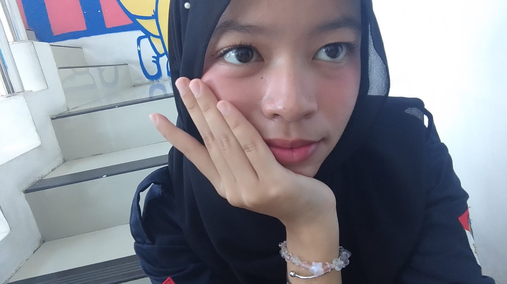
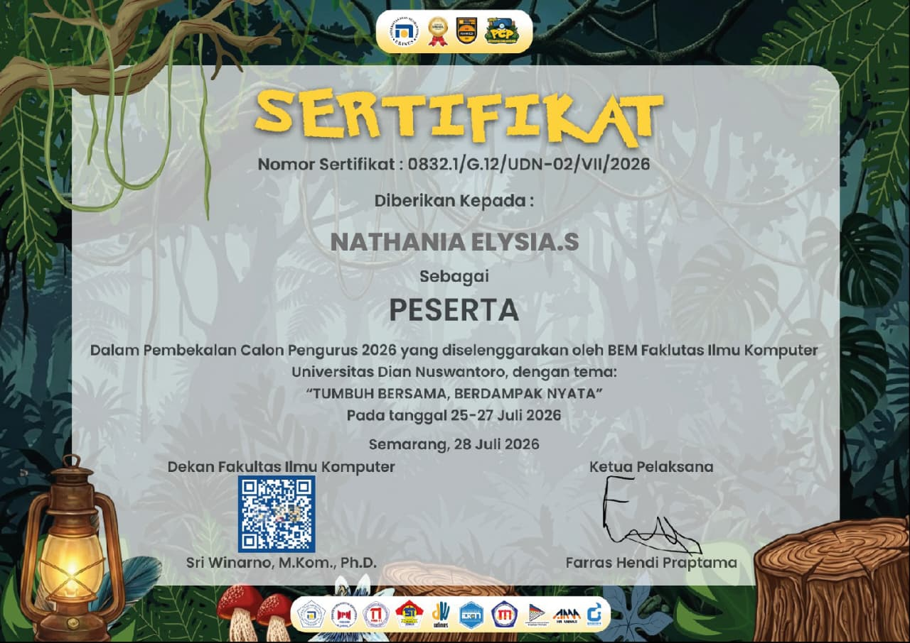
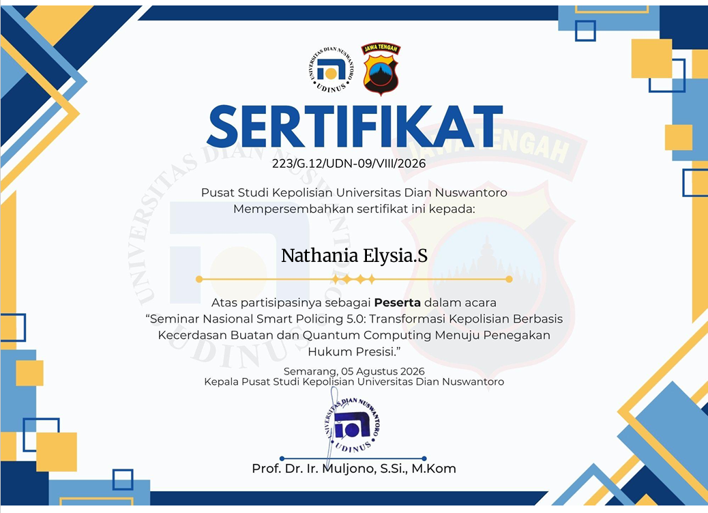
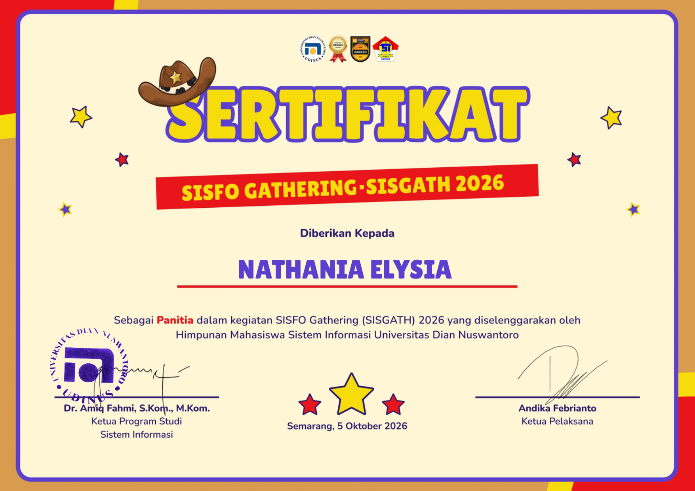
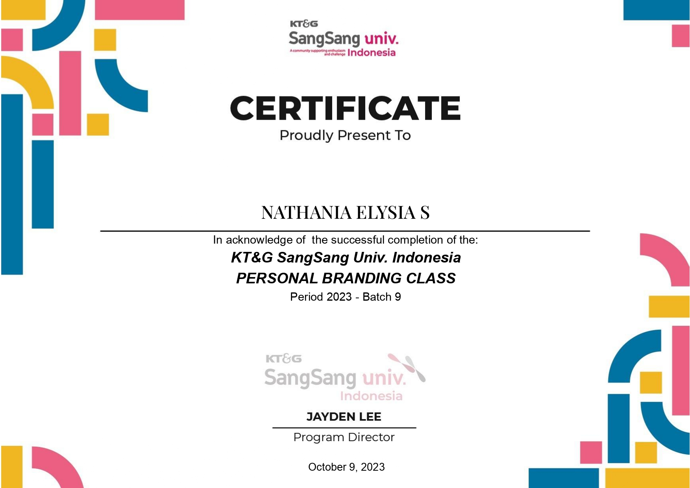

HELLO, I'M
Saya memiliki minat dalam bidang teknologi informasi, khususnya pemrograman web, sistem informasi, dan pengembangan basis data.

ABOUT ME
Nama saya Nathania Elysia.S
Saya merupakan mahasiswa Sistem Informasi yang memiliki ketertarikan pada bidang teknologi informasi, khususnya pemrograman web, sistem informasi, dan pengembangan basis data.
Saya senang mempelajari hal-hal baru dan terus mengembangkan kemampuan melalui kegiatan belajar, praktik, serta mengikuti perkembangan teknologi.
mempelajari HTML, CSS, dan pengembangan website.
Tertarik pada pengembangan dan pengelolaan sistem informasi.
MY JOURNEY
SMKN 1 BATANG
Mempelajari dasar komputer, jaringan, perangkat keras, sistem operasi, serta teknologi informasi.
Universitas Dian Nuswantoro
Mempelajari sistem informasi, basis data, pemrograman, analisis sistem, dan pengembangan teknologi informasi.
Beberapa bidang yang saya minati dan ingin terus saya kembangkan.
Membuat dan mengembangkan website.
Mempelajari sistem dan teknologi informasi.
Mengelola dan merancang data dalam sistem.
MY EXPERIENCE
Melaksanakan kegiatan Pelatihan Kerja Langsung yang diselenggarakan oleh SMK, agar kemampuan yang didapat bisa di praktikkan dalam dunia kerja.
Mengikuti ekstrakurikuler yaitu taekwondo, dan selalu mengikuti pelatihan taekwondo yang dijadwalkan sekolah, serta mengikuti kenaikan sabuk putih ke sabuk kuning.
Setelah lulus dan banyak harapan yang tidak sesuai ekspetasi, saya mencoba untuk melamar kerja, dan yang paling lama yaitu kerja di konter sebagai penjual pulsa, transaksi antar bank dan e-wallet dan barang barang elektronik lainnya.
MY CERTIFICATES

Sertifikat pembekalan calon pengurus.

Sertifikat seminar kepolisian.

Sertifikat kegiatan makrab prodi sistem informasi.

Sertifikat pengembangan personal branding
GET IN TOUCH
Silakan kirimkan pesan atau saran melalui form di samping. Masukan yang diberikan dapat membantu saya mengembangkan website ini menjadi lebih baik.